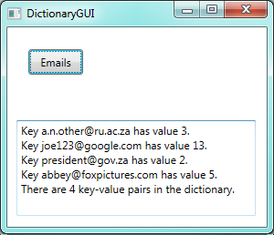
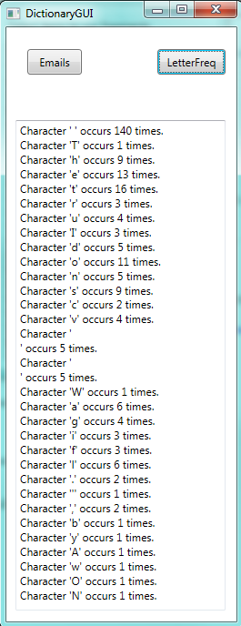
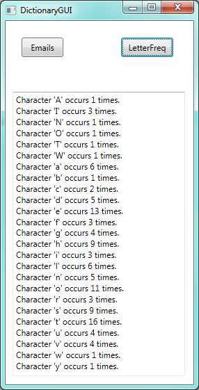

29. Dictionaries¶
Arrays, strings and lists all have one thing in common: the elements can be accessed by their index position.
Dictionaries are different. They associate values with keys. The keys can be one type, the values can be another (possibly different) type. Every entry in the dictionary is a pair with two parts: the key, and its associated value. We’ll refer to the pair as a key-value pair.
Let’s begin with a simple dictionary that keeps track of how many emails we have have sent to others. The key will be the email address that we’ve sent email to, the value associated with each key will be the number of emails we’ve sent to that address since we began counting.
1 2 3 4 5 6 7 8 9 10 11 12 13 14 15 16 17 18 | private void btnDemo1_Click(object sender, RoutedEventArgs e)
{
Dictionary<string, int> emailCounter = new Dictionary<string, int>();
emailCounter["a.n.other@ru.ac.za"] = 3;
emailCounter["joe123@google.com"] = 12;
emailCounter["president@gov.za"] = 2;
emailCounter["abbey@foxpictures.com"] = 5;
emailCounter["joe123@google.com"] += 1;
foreach (string k in emailCounter.Keys)
{
txtResult.AppendText(string.Format("Key {0} has value {1}.\n", k, emailCounter[k]));
}
txtResult.AppendText(string.Format(
"There are {0} key-value pairs in the dictionary.\n", emailCounter.Count));
}
|
Take note:
- In line 3 we define a generic dictionary and supply the type of the keys,
string, and the type of the values,int. On the right-hand-side of the assignment we instantiate a new empty dictionary. - Lines 5-8 add new items to the dictionary. But notice now that the “index” is a key — a string in this case.
- Line 10 changes the value associated with a key, by incrementing it.
- In line 12, we see that we can get an enumerator for the keys, so
foreachcan look at each key in turn. Each key is a string, which is assigned tokin the loop. - Line 14 outputs each key and the value associated with it.
- Line 17 shows that we can use the
Countproperty to discover how many pairs are in the dictionary.
Here’s what we get:

Hashing
Our output here shows the pairs in the same order as we inserted them, but
this is misleading! In general, the order in which a dictionary stores
its pairs is unpredictable. (So the order in which we’ll get them
delivered by a foreach becomes unpredictable.) C# uses
complex “hashing” algorithms, designed for very fast access, to determine
where the key-value pairs get stored in memory. In small
dictionaries like ours, C# might choose a list, but for large dictionaries
it will switch techniques. If you want to learn more about
hashing, Wikipedia has some interesting information!
29.1. Dictionary Initializers¶
Similar to what have for integer, doubles, arrays, strings, and lists, there is also some useful initializer syntax in C#. This lets us provide some pairs when we instantiate the dictionary. Lines 5-8 in our example can also be coded like this:
1 2 3 4 5 | Dictionary<string, int> emailCounter = new Dictionary<string, int>()
{ {"a.n.other@ru.ac.za", 3},
{"joe123@google.com", 12},
{"president@gov.za", 2},
{"abbey@foxpictures.com", 5} };
|
If we try to
get the value associated with a key that doesn’t exist in our dictionary,
we’ll get a KeyNotFound exception. So
1 | int n = emailCounter["bill@microsoft.com"]; // Exception
|
is not going to work!
29.2. Dictionary Methods¶
Here are a couple of useful methods:
ContainsKey(key)can (safely) test whether a key is in a dictionary.Remove(key)removes the key and its associated value from the dictionary.Clear()will remove all key-value pairs and leave the dictionary empty.
A dictionary is a reference type. Because it can be updated, we need to be aware of aliasing. Whenever two variables refer to the same object, changes to one affect the other.
Dictionaries and lists are your friends!
As you learn more C# you’ll discover more exotic ways of organizing your collections: we’ve briefly covered lists and dictionaries, but you’ll find queues, stacks, sets, deques, and possibly others.
But most of the time the most practical data structure of choice will be either a list (if you don’t need key-value associations), or a dictionary (if you do).
If you want some extra reading on C# dictionaries, try http://www.dotnetperls.com/dictionary.
29.3. Counting letters in a string¶
We’ll build a frequency table of the letters in a string. Such a frequency table might be useful for compressing a text file. Because different letters appear with different frequencies, we can compress a file by using shorter codes for common letters and longer codes for letters that appear less frequently.
Dictionaries provide an elegant way to generate a frequency table:
1 2 3 4 5 6 7 8 9 10 11 12 13 14 15 16 | private Dictionary<char, int> letterFreqs(string theText)
{
Dictionary<char, int> result = new Dictionary<char, int>();
foreach (char c in theText)
{
if (result.ContainsKey(c))
{
result[c]++;
}
else
{
result[c] = 1;
}
}
return result;
}
|
We start with an empty dictionary. For each character in the string we test whether it is the first time we’ve encountered it (and it becomes a new association in our dictionary at line 12), or we bump (increment) the counter of the number of times we’ve already seen it (line 8).
With the code below to exercise our method we get the output here.
1 2 3 4 5 6 7 8 9 10 11 12 13 14 15 16 17 | private void btnLetterFreq_Click(object sender, RoutedEventArgs e)
{
string poem =
@" The truth I do not stretch or shove
When I state that the dog is full of love.
I've also found, by actual test,
A wet dog is the lovingest.
Ogden Nash";
Dictionary<char, int> freqs = letterFreqs(poem);
foreach (char k in freqs.Keys)
{
txtResult.AppendText(string.Format(
"Character '{0}' occurs {1} times.\n", k, freqs[k]));
}
}
|
Those broken lines in the middle of the output correspond to the carriage return and newline characters at the end of each line of the poem. We’ll change our frequency counter to ignore them. And it might be more appealing to get back a frequency table in alphabetical order.
29.4. Slightly fancier dictionaries¶
Dictionaries (and lists) are important enough that the .NET Framework gives us a number of different flavours of each that we can choose from. This allows a smart programmer to choose a type that is most effective for the problem.
In the System.Collections.Generic namespace (we’re already using it for type Dictionary)
we also find a SortedDictionary type. And if we want more choice,
the System.Collections.Specialized namespace offers us a ListDictionary type,
an OrderedDictionary type and a StringDictionary type.
Let’s put some changes into our code:
1 2 3 4 5 6 7 8 9 10 11 12 13 14 15 16 17 18 19 | private IDictionary<char, int> letterFreqs(string theText)
{
SortedDictionary<char, int> result = new SortedDictionary<char, int>();
foreach (char c in theText)
{
if (char.IsLetter(c))
{
if (result.ContainsKey(c))
{
result[c]++;
}
else
{
result[c] = 1;
}
}
}
return result;
}
|
- At line 6 we test that
cis a letter before we count it. - At line 3 we use a
SortedDictionaryinstead of a plain one. This guarantees that when we use theforeachwe will get the keys out in sorted order. Otherwise all the code is the same. - At line 1 we’ve done something special: we’re returning a type called
IDictionary. We’re going to talk about that in the next chapter.
We make one change to the calling code, — change the definition at line 11 to also be an IDictionary
instead of Dictionary, and we get the new output shown here. (Join the dots... recall that for
characters, all upper-case letters are ordered before the lower-case letters).
You could lower-case the string if you wanted capitals and small letters to be treated equivalently. There are also advanced options (beyond the scope of this book) to set up a dictionary that uses our own “comparer” method that we supply. That would give us complete control over decisions about when two keys are considered less than or equal to each other.
29.5. Dictionary, array, or list?¶
If we think about it, lists and arrays are also “mappings” of keys to associated data. An array of the names of the days of the week would have position 0 associated with “Sunday”, position 1 with “Monday”, and so on.
In an array or list the index (or key) must always be an integer and the lowest index is always zero. For dictionaries this is not the case.
So, specifically for the situation when our keys are integers, we should ask “Which of list, or array, or dictionary, will be a good choice?”.
So here are two sample problems, let us think about the best data representation for each:
a) We want to check whether a random number generator really does give a uniform distribution of numbers in the range [0,100). We’ll generate ten million random numbers and count how many times each one occurs. For a uniform generator, we’ll expect the frequencies should be close to each other. (And our statistics wizards will be able to define exactly what is meant by “close enough”.)
b) People work in a building that uses an access card to allow them through specific doors. The security card uses a date of birth followed by two random digits, for example 1994052674, as a key, and the associated data is a string of characters describing the doors they can open — “A103,B12,Foyer,North Seminar Room,Stairwell”.
In the first case the keys are “dense”, and there is no need for a list that can grow
or shrink dynamically. So an integer array of 100 elements sounds ideal.
Each time we generate a new random number we can immediately know which array element to
update. So int[] freqs = new int[100]; will be a great way to store this data.
In the second problem the nature of the keys is very different. We might only have
eighty people who can access the building, but their keys are all very large
integers, and far apart from one another. If we plotted all the keys on a number
line they would be very “sparse”. In this case, a Dictionary<int, string>
would be a better choice.
In the first case, we, the programmers, are really determining where to store the elements. In the second case, we’ve handed that problem over to the dictionary.
29.6. Glossary¶
- dictionary
- A collection of key-value pairs that maps from keys to values.
- key
- A data item that is mapped to a value in a dictionary. Keys are used to look up values in a dictionary. Each key must be unique across the dictionary.
- key-value pair
- One of the pairs of items in a dictionary. Values are looked up in a dictionary by their key.
29.7. Exercises¶
Perform a frequency count on randomly generated numbers in the range [0,10000). Do it twice: once with an array, and once with a dictionary. Devise an experiment to compare the performance of the two alternatives. Try to control for the overheads of generating the random numbers and running the loops, so that your experimental results become an accurate measure of the speeds of the underlying storage mechanisms.
Suppose every computer lab user has a usercode like g09m1234. Associated with the usercode is a
UserProfileobject that holds their name, permissions, desktop preferences, and course groups that they belong to. Give a type definition for a dictionary that could maintain the mapping between the usercode and its profile.In our “List and Array Algorithms” chapter we worked extensively with Alice’s Adventures in Wonderland. Re-use as much of that code as you can, and produce an alphabetic frequency count of the words in the book, something like this:
Word Count ======================= a 631 a-piece 1 abide 1 able 1 about 94 above 3 absence 1 absurd 2
How many times does the word “alice” occur in the book?
What is the longest word in Alice in Wonderland? How many characters does it have?